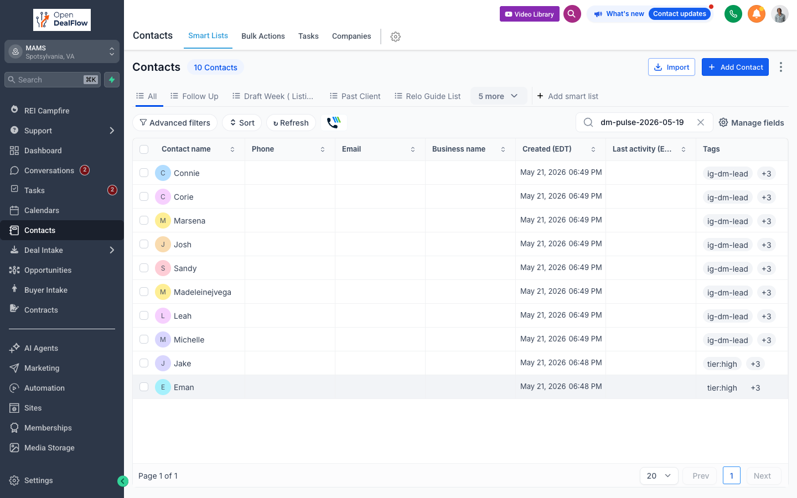

All 10. Right here.
"10 Contacts" =
the whole batch.
Filter you typed.
Save as smart list.
Jake + Eman.
tier:high -- move on these first.
The other 8.
Nurture. Casual touch.
Tap a name to open the contact.